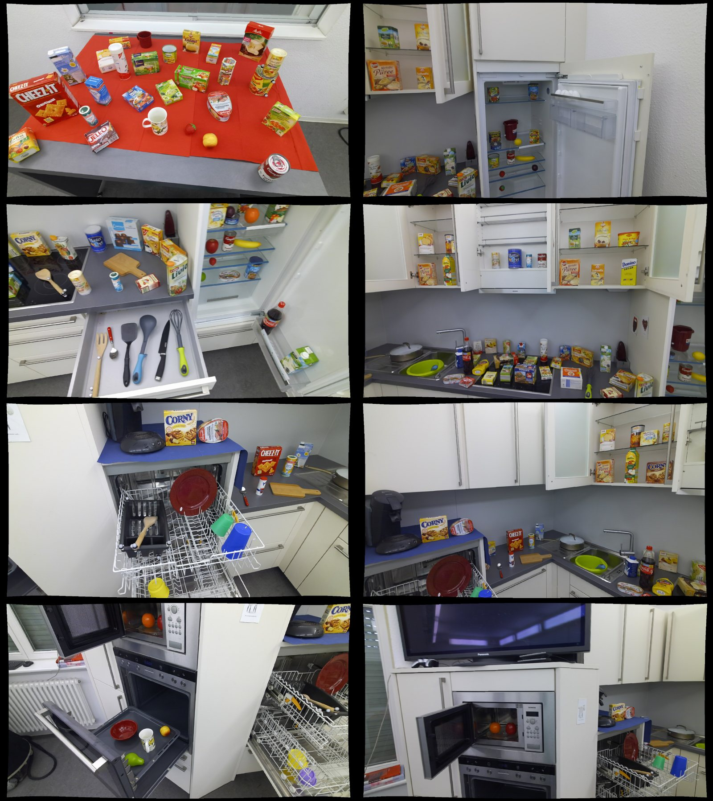
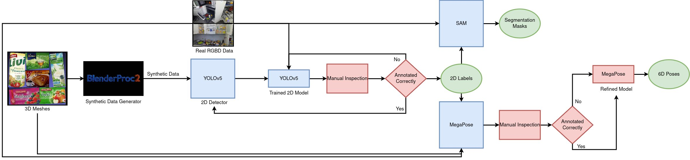
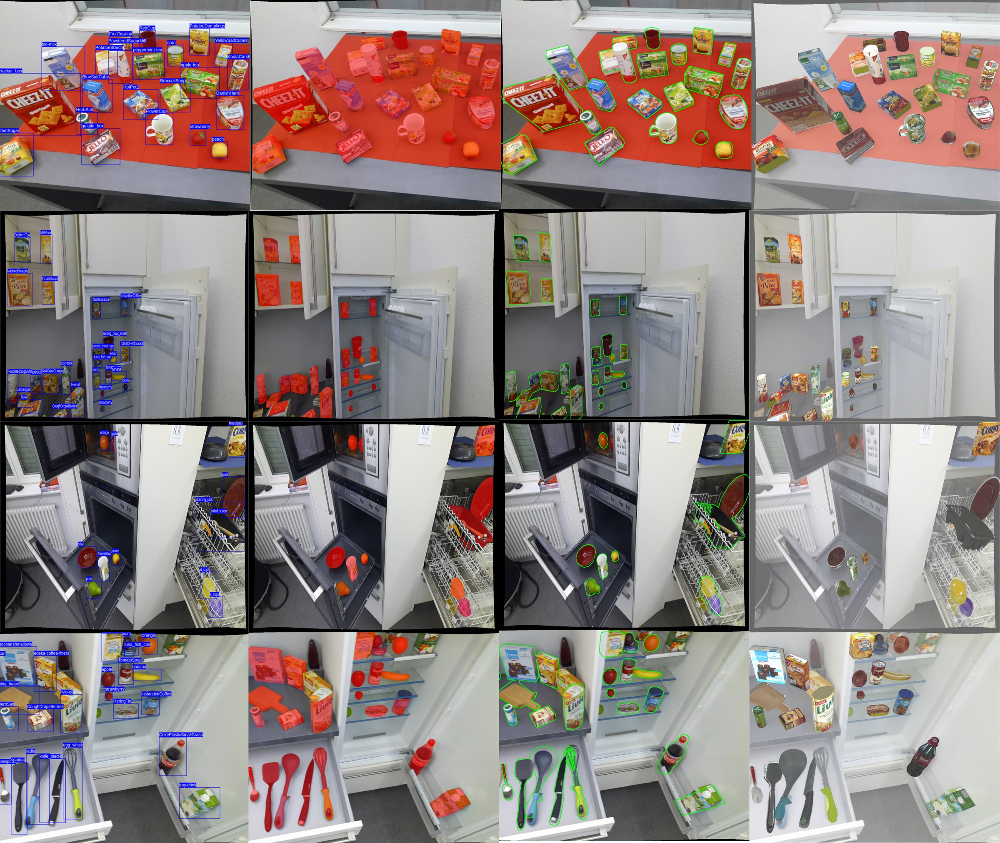
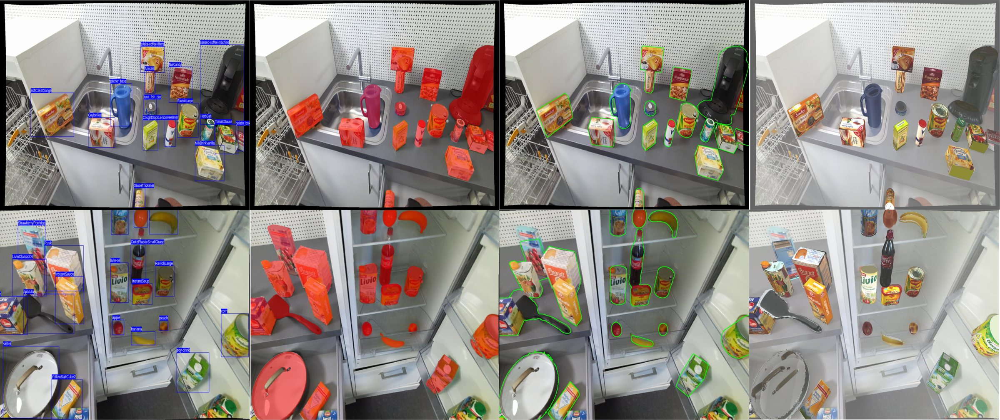

Despite the recent progress on 6D object pose estimation methods for robotic grasping, a substantial performance gap persists between the capabilities of these methods on existing datasets and their efficacy in real-world mobile manipulation tasks, particularly when robots rely solely on their monocular egocentric field of view (FOV). Existing real-world datasets primarily focus on table-top grasping scenarios, where a robotic arm is placed in a fixed position and the objects are centralized within the FOV of fixed external camera(s). Assessing performance on such datasets may not accurately reflect the challenges encountered in everyday mobile manipulation tasks within kitchen environments such as retrieving objects from higher shelves, sinks, dishwashers, ovens, refrigerators, or microwaves. To address this gap, we present Kitchen, a novel benchmark designed specifically for estimating the 6D poses of objects located in diverse positions within kitchen settings. For this purpose, we recorded a comprehensive dataset comprising around 205k real-world RGBD images for 111 kitchen objects captured in two distinct kitchens, utilizing one humanoid robot with its egocentric perspectives. Subsequently, we developed a semi-automated annotation pipeline, to streamline the labeling process of such datasets, resulting in the generation of 2D object labels, 2D object segmentation masks, and 6D object poses with minimized human effort. The benchmark, the dataset, and the annotation pipeline will be publicly available upon acceptance.

Annotating objects with their ground truth 6D poses is a labor-intensive and time-consuming task. To streamline this process, we propose a semi-automated annotation pipeline. The pipeline begins with inputting 3D meshes of dataset objects, which BlenderProc2 processes to generate synthetic data with 2D bounding boxes. This annotated 2D data is utilized to train a YOLOv5 2D object detector. Subsequently, real-world recorded data is fed into the trained model, and the output undergoes manual inspection for correct and incorrect labeling. The correctly labeled images are employed for model refinement, which is then validated on the incorrectly labeled ones. This iterative process continues until all images are accurately labeled. The images with correct labels are then passed to Segment Anything (SAM) to produce masks. Finally, the images, along with the 2D labels and 3D meshes, are input into MegaPose to generate 6D poses for detected objects. Manual inspection of poses is conducted through contour and mesh overlay images, and corrected annotations are used to fine-tune MegaPose iteratively until the entire dataset is accurately annotated.



@inproceedings{younes2024kitchen,
title={Kitchen: A real-world benchmark and dataset for 6d object pose estimation in kitchen environments},
author={Younes, Abdelrahman and Asfour, Tamim},
booktitle={2024 IEEE-RAS 23rd International Conference on Humanoid Robots (Humanoids)},
pages={803--810},
year={2024},
organization={IEEE}
}